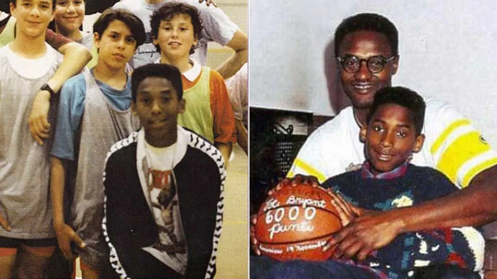
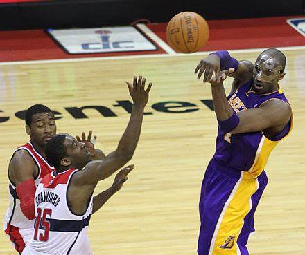

Infancia:
En 1991 Bryant regresó a los Estados Unidos, donde asistió al Instituto Lower Merion de Ardmore, en el municipio de Lower Merion de Filadelfia y se unió a los Aces, su equipo de baloncesto. A pesar de tener un primer año mediocre, en el que solo lograron 4 victorias y 20 derrotas, en los tres siguientes el equipo acumuló un balance de 77 victorias y 13 derrotas, periodo en el que Bryant jugó en todas las posiciones de la cancha. Se convirtió en el máximo anotador de la historia del instituto con 2883 puntos, tras superar la marca de Wilt Chamberlain (2359 puntos) y de Carlin Warley (2441 puntos). USA Today y Parade Magazine le galardonaron en su año sénior con el premio Naismith Prep Player of the Year Award y fue incluido en el McDonald's All-America Team. Esa temporada, sus promedios fueron de 30,8 puntos, 12 rebotes, 6,5 asistencias, 4 robos de balón y 3,8 tapones por partido, y lideró a Lower Merion al título estatal.

Familia:
fue el menor de los hijos, después de sus hermanas Shaya y Sharia, de Joe Bryant, un profesional del baloncesto que por entonces jugaba en los Philadelphia 76ers, y Pamela Cox Bryant.Kobe Bean Bryant nació el 23 de agosto de 1978 en Filadelfia (Pensilvania). Cuando Bryant tenía seis años, su padre abandonó la NBA y se mudó con su familia a Italia, en cuya liga continuó con su carrera profesional. El pequeño Bryant se aclimató al estilo de vida y aprendió a hablar con fluidez no solo italiano sino también español.

Su carrera:
En su temporada de ‘rookie’, Kobe decide participó en concurso de mates del All Star Game de 1997 disputado en Cleveland y lo ganó (fue, con 18 años, el ganador más joven de la historia del concurso).
En su cuarta temporada en la NBA, Kobe ya era una de las estrellas de la liga. En los Lakers era el escudero de Shaquille O’Neal (38 puntos y 17 rebotes de media en las Finales ante Indiana). Junto a él, consiguió en 2000, 2001 y 2002 un legendario ‘threepeat’ de campeón con el conjunto angelino.
En la temporada 2007/08 logró el MVP de la ‘regular season’ de la NBA con unos promedios de 28.3 puntos, 6.3 rebotes y 5.4 asistencias. La llegada de Pau Gasol a los Lakers revitalizó al equipo y Kobe logró en 2009 y 2010 dos campeonatos de forma consecutiva. En total, cinco títulos.